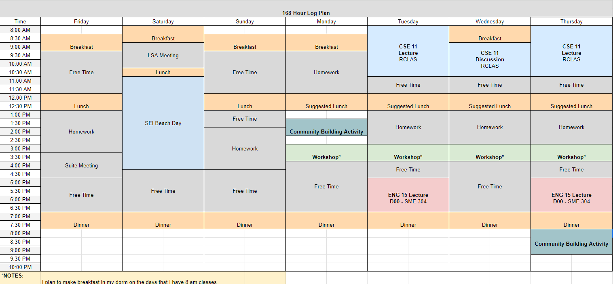
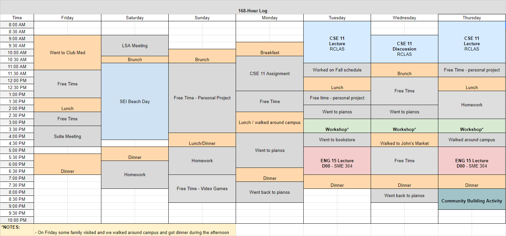

168 Hour Log Plan
Actual 168 Hour Log
Reflection
One thing I noticed when comparing the plan with my actual log was that my meal times often varied. I planned to eat breakfast every day, yet this was not always the case. I often ate a brunch around 11pm and a dinner at night. I found it hard to find time to eat in the morning especially when my classes start near the same time that the earliest dining place at Sixth opens. In the future I want to make sure I am eating enough and I plan to buy food at John's market the night before that I can make/eat before the morning classes start.
feel free to reach out at
eschwartzman@ucsd.edu